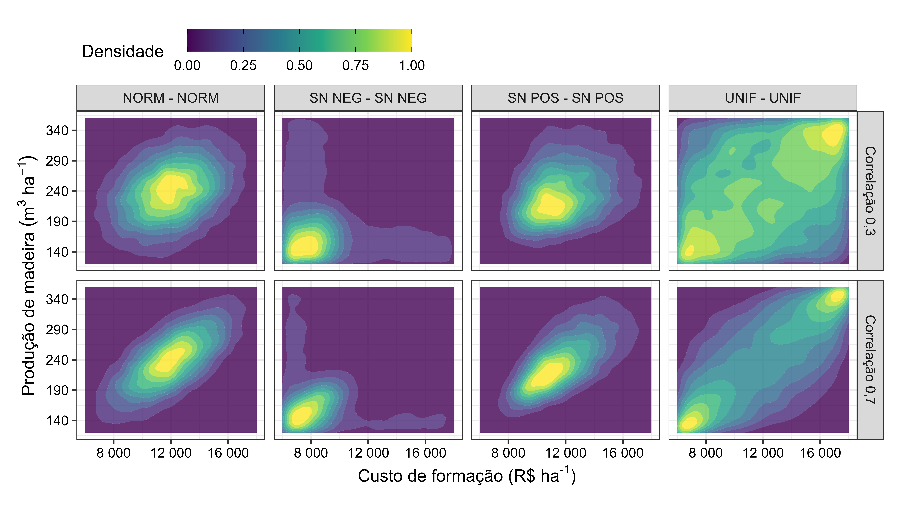

Dependência entre custo de formação e produção de madeira
experimento-03_dependencia-custo-producao.Rmd
library(vet)
library(dplyr)
#>
#> Attaching package: 'dplyr'
#> The following objects are masked from 'package:stats':
#>
#> filter, lag
#> The following objects are masked from 'package:base':
#>
#> intersect, setdiff, setequal, union
library(tidyr)
library(stringr)
library(ggridges)
library(ggplot2)
library(patchwork)
library(scales)
make_marginal_plot <- function(.data=tab_amostra_dependente, corr="0.7", marginal="norm - norm", tag = NULL) {
tab_custo_producao <- .data |>
filter(as.character(vl_correlacao) == corr) |>
filter(cd_marginais == marginal) |>
select(cd_var, vl_amostra) |>
group_by(cd_var) |>
mutate(id = row_number()) |>
spread(cd_var, vl_amostra)
plt_hist_custo <- tab_custo_producao |>
ggplot(aes(custo)) +
geom_histogram(fill = "black", color = "white", alpha = 0.8) +
labs(x = NULL, y = "Frequência") +
scale_x_continuous(breaks = seq(0, 30000, 3000), labels = label_number_auto()) +
scale_y_continuous(breaks = seq(0, 10000, 300), labels = label_number_auto()) +
theme_bw() +
theme(
text = element_text(color = "black"),
axis.text = element_text(color = "black")
)
plt_hist_producao <- tab_custo_producao |>
ggplot(aes(producao)) +
geom_histogram(fill = "black", color = "white", alpha = 0.8) +
coord_flip() +
labs(x = NULL, y = "Frequência") +
scale_x_continuous(breaks = seq(40, 500, 50)) +
scale_y_continuous(breaks = seq(0, 10000, 300), labels = label_number_auto()) +
theme_bw() +
theme(
text = element_text(color = "black"),
axis.text = element_text(color = "black")
)
plt_scatter_custo_producao <- tab_custo_producao |>
ggplot(aes(custo, producao)) +
geom_point(alpha = 0.07) +
#geom_smooth(method = "lm") +
labs(
x = expression(paste("Custo de formação ", "(R$ ", "ha"^"-1", ")")),
y = expression(Produção~de~madeira~(m^3~ha^-1))
) +
scale_x_continuous(breaks = seq(0, 30000, 3000), labels = label_number_auto()) +
scale_y_continuous(breaks = seq(40, 500, 50)) +
theme_bw() +
theme(
text = element_text(color = "black"),
axis.text = element_text(color = "black")
)
return(list(plt_scatter_custo_producao, plt_hist_custo, plt_hist_producao))
}Correlação entre marginais
lst_plt_norm_norm_01 <- make_marginal_plot(corr="0.1", marginal="norm - norm")
lst_plt_norm_norm_07 <- make_marginal_plot(corr="0.7", marginal="norm - norm")
wrap_plots(
lst_plt_norm_norm_01[[2]],
plot_spacer(),
lst_plt_norm_norm_07[[2]],
plot_spacer(),
lst_plt_norm_norm_01[[1]],
lst_plt_norm_norm_01[[3]],
lst_plt_norm_norm_07[[1]],
lst_plt_norm_norm_07[[3]],
nrow = 2, ncol = 4,
widths = c(1, 0.3, 1, 0.3),
heights = c(0.3, 1)
)
#> `stat_bin()` using `bins = 30`. Pick better value with `binwidth`.
#> `stat_bin()` using `bins = 30`. Pick better value with `binwidth`.
#> `stat_bin()` using `bins = 30`. Pick better value with `binwidth`.
#> `stat_bin()` using `bins = 30`. Pick better value with `binwidth`.
Distribuição de probabilidade
lst_plt_norm_norm_01 <- make_marginal_plot(corr="0.1", marginal="unif - unif")
lst_plt_norm_norm_07 <- make_marginal_plot(corr="0.7", marginal="unif - unif")
wrap_plots(
lst_plt_norm_norm_01[[2]],
plot_spacer(),
lst_plt_norm_norm_07[[2]],
plot_spacer(),
lst_plt_norm_norm_01[[1]],
lst_plt_norm_norm_01[[3]],
lst_plt_norm_norm_07[[1]],
lst_plt_norm_norm_07[[3]],
nrow = 2, ncol = 4,
widths = c(1, 0.3, 1, 0.3),
heights = c(0.3, 1)
)
#> `stat_bin()` using `bins = 30`. Pick better value with `binwidth`.
#> `stat_bin()` using `bins = 30`. Pick better value with `binwidth`.
#> `stat_bin()` using `bins = 30`. Pick better value with `binwidth`.
#> `stat_bin()` using `bins = 30`. Pick better value with `binwidth`.
Distribuição de probabilidade
Dependencia entre as distribuições
tab_plot <- tab_amostra_dependente |>
filter(as.character(vl_correlacao) %in% c("0.3", "0.7")) |>
filter(cd_marginais %in% c("unif - unif", "norm - norm", "sn_pos - sn_pos", "sn_neg - sn_neg")) |>
group_by(cd_var, cd_marginais) |>
mutate(id = row_number()) |>
ungroup() |>
select(-nm_var) |>
spread(cd_var, vl_amostra)
plt_density <- tab_plot |>
ggplot(aes(custo , producao)) +
geom_density2d_filled(
aes(fill = after_stat(level)),
alpha = 0.8,
contour_var = "ndensity", show.legend = FALSE
) +
facet_grid(
vl_correlacao ~ cd_marginais,
labeller = labeller(
cd_marginais = \(x) str_to_upper(str_replace_all(x, "_", " ")),
vl_correlacao = \(x) paste("Correlação", formatC(as.numeric(x), decimal.mark = ","))
)
) +
labs(
x = expression(paste("Custo de formação ", "(R$ ", "ha"^"-1", ")")),
y = expression(Produção~de~madeira~(m^3~ha^-1))
) +
scale_x_continuous(breaks = seq(0, 30000, 4000), labels = label_number_auto()) +
scale_y_continuous(breaks = seq(40, 500, 50)) +
#scale_fill_viridis_c('Quantil', labels = percent(seq(0.1, 1, 0.1)), guide = guide_colourbar()) +
theme_bw() +
theme(
text = element_text(color = "black"),
axis.text = element_text(color = "black"),
legend.position = "top", legend.justification = "left"
)
get_legend <- function(a.gplot){
tmp <- ggplot_gtable(ggplot_build(a.gplot))
leg <- which(sapply(tmp$grobs, function(x) x$name) == "guide-box")
legend <- tmp$grobs[[leg]]
legend
}
plt_legend <- {tibble(x = 1:11, y = seq(0, 1, 0.1)) |>
ggplot(aes(x, y, color = y)) +
geom_point() +
theme(legend.position = "top", legend.justification = "left", legend.margin=margin(l = 1.65, unit='cm') ) +
scale_color_viridis_c("Densidade ") +
guides(color = guide_colorbar(barwidth = 10, barheight = 1, ticks.colour = "black"))
} |>
get_legend()
plot_spacer() +
plt_legend +
plt_density +
plot_layout(nrow = 3, heights = c(.001, 0.1, 1))

Distribuição de probabilidade